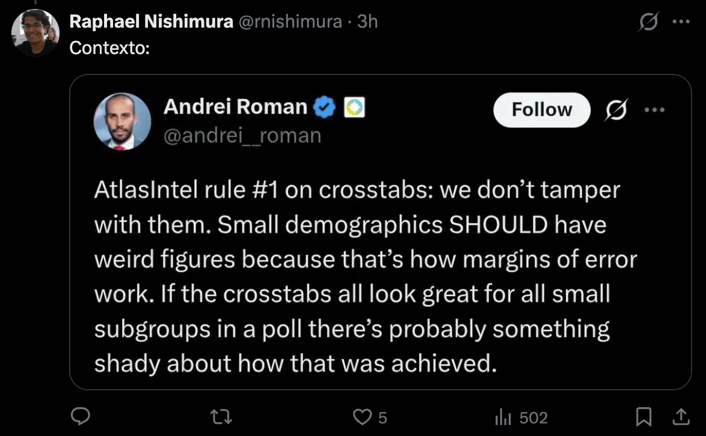

24 posts, cada um com card 16:9 pronto para screenshot e texto longo (formato X) pronto para colar. Arco: o que a Atlas acertou (1–2) → o registro trocado no rastro da crise Michelle-Flávio (3–4) → a tesoura de gênero invertida (5–7) → as quatro impressões digitais de um painel online: o “não sei” que sumiu, o sistema partidário de ponta-cabeça e a onda MBL/Missão (8–10) → cotas, renda e perguntas-fantasma (11–13) → o ranking secreto da família Bolsonaro e o vazamento na direita (14–17) → o teto de Lula e o consenso das 4 pesquisas (18–19) → a margem de 1 ponto, a DRE e a estratégia (20–22) → cobrança e veredito (23–24). Sem hashtags: o X premia conteúdo, não tag.
Como publicar: dê screenshot em cada card (proporção exata 16:9), clique em “Copiar texto” para o corpo do post e publique na ordem. Dossiê-mãe: brasil.arvor.co/atlasintel_260626.html · Registro TSE BR-04582/2026.
~980 charsToda semana, uma pesquisa na mesa de operação. Hoje, a AtlasIntel/Bloomberg de junho — a que mais deu o que falar.
Tem um número nela que não fecha com nenhuma outra pesquisa do país. Na Atlas, Flávio Bolsonaro tem 43,5% entre MULHERES e só 29,1% entre HOMENS. Uma vantagem de +14,4 pontos entre elas.
Isso é o oposto de tudo. Datafolha, Nexus e Quaest, todas de junho, mostram Flávio forte entre homens e fraco entre mulheres. A Atlas inverteu a tesoura.
E não para aí. A pesquisa trocou de registro no meio do caminho, no rastro da crise Michelle-Flávio. Escondeu blocos inteiros do questionário. Fez o “não sei” quase sumir. E colocou um partido que mal existe na frente do PP e do União Brasil.
Auditei o relatório, o questionário, a DRE, a declaração do estatístico e o registro no TSE. Cruzei com PNAD, TSE Eleitorado e as três pesquisas concorrentes.
O veredito é o mais interessante de todos: a pesquisa está contaminada — mas não é inútil. Thread. 🧵
~880 charsAuditoria séria começa pelo que está certo. E a Atlas acertou coisas que pesam.
Primeiro, a ordem do questionário. O voto presidencial (1º e 2º turno) vem ANTES da bateria sobre Michelle, Banco Master/Jaques Wagner e Trump/tarifas. Isso protege o topo de linha do voto de contaminação direta por esses temas. Nem toda pesquisa faz isso.
Segundo, a calibragem de sexo e região. A amostra tem 52,3% de mulheres e distribuição regional quase idêntica ao TSE Eleitorado Atual. Sudeste 41,4 x 42,1; Nordeste 28,5 x 27,6. Nada torto aqui.
Terceiro, o tamanho: 4.999 casos dão base para cruzamentos que pesquisas de 2.000 não sustentam.
Quarto, a transparência documental: DRE, questionário completo, declaração do estatístico e registro no TSE vieram anexados. Dá para conferir.
Ou seja: não é caso de gritar “fraude”. É caso de bisturi. E o bisturi encontra muita coisa. Vamos a ela.
~1010 charsAuditoria começa por bater papel com papel. E aqui os papéis não batem.
Em 28/06 já circulava notícia citando uma Atlas registrada sob o número BR-03448/2026, com 5 mil eleitores. Mas a pesquisa que foi efetivamente divulgada saiu sob OUTRO registro: BR-04582/2026 — este já trazendo um bloco de perguntas sobre Michelle Bolsonaro, aplicado depois do vídeo da crise familiar.
O estatístico e metodólogo Raphael Nishimura registrou o movimento: aparentemente o registro anterior foi cancelado e substituído para incluir as perguntas sobre Michelle. E — detalhe grave — a pesquisa anterior JÁ ESTAVA EM CAMPO, com gente respondendo.
Some a isso as diferenças finas entre o registro e o PDF:
• O TSE marca início de campo em 25/06; o relatório público diz 26/06.
• O registro declara 5.000 entrevistas; o relatório publica 4.999.
Nenhum desses pontos, sozinho, derruba a pesquisa. Um caso a menos não muda nada. Mas trocar de registro no rastro de uma crise, com campo já rodando, exige explicação pública. Isso é procedência do dado — o alicerce de tudo.
~940 charsQuem levanta a lebre não é adversário político. É um dos metodólogos de pesquisa mais respeitados do país.
Raphael Nishimura, estatístico especialista em surveys, escreveu sobre o caso:
“Uma coisa que me incomoda nesta história é que aparentemente a pesquisa registrada na quarta já estava em andamento, com pessoas a responder. Agora, com o cancelamento, possivelmente vão jogar esses dados fora.”
E completou, sobre método:
“Durante minha carreira inteira, sempre defendi não jogar nenhum dado fora, a não ser que se tenha bons motivos para suspeitar da qualidade ou legitimidade. Jogar fora dados de pessoas que gastaram seu tempo respondendo é uma tremenda falta de consideração.”
Traduzindo: uma pesquisa entra em campo, coleta respostas reais, é cancelada, re-registrada com perguntas novas sobre Michelle — e os dados anteriores somem. Isso não prova manipulação do resultado final. Mas é exatamente o tipo de coisa que um instituto que se vende como padrão-ouro precisa explicar em público. Não explicou.
Entre homens, 29,1%. Entre mulheres, 43,5%. Renan Santos faz 12,8% entre homens e 3,2% entre mulheres. Sexo não é célula pequena numa amostra de 5 mil.
HomensMulheres
Flávio · H
29,1
Flávio · M
43,5
Lula · H
49,2
Lula · M
43,7
Renan · H
12,8
Renan · M
3,2
a diferença de sexo de Flávio (+14,4) é 5× a margem plausível da diferença
~1000 charsEste é o achado que fez a pesquisa viral. E ele é real.
No cruzamento de gênero do cenário principal:
• Flávio: 29,1% entre HOMENS, 43,5% entre MULHERES. Diferença de +14,4 a favor delas.
• Lula: 49,2% entre homens, 43,7% entre mulheres.
• Renan Santos (Missão): 12,8% entre homens, 3,2% entre mulheres.
Pare no número de Flávio. Um candidato da direita bolsonarista com QUATORZE pontos a mais entre mulheres do que entre homens. Não existe teoria eleitoral brasileira que sustente isso — a literatura inteira mostra o contrário: a família Bolsonaro tem déficit histórico entre mulheres.
E antes que alguém diga “é ruído de célula pequena”: numa amostra de quase 5 mil casos, homens e mulheres têm mais de 2 mil cada. A margem da diferença entre dois subgrupos desse tamanho, no pior caso, gira em torno de ±2,6 pontos. A diferença observada é 14,4. Cinco vezes maior.
Isso não é sorte estatística. É sintoma — de seleção da amostra, de ponderação ou de instabilidade do dado. E o próprio dono da Atlas tentou responder. Próximo post.
O CEO da Atlas defendeu que grupos pequenos DEVEM ter números esquisitos. Correto — mas homem e mulher não são grupos pequenos. Nishimura ironizou.

Andrei Roman: “small demographics SHOULD have weird figures.” Sexo tem 2 mil casos de cada lado.
arvor intelligence · auditoria atlasintel 062026fonte: @andrei__roman e @rnishimura
~980 charsA defesa veio do próprio Andrei Roman, CEO da AtlasIntel:
“Regra nº 1 da Atlas sobre crosstabs: a gente não mexe neles. Demografias pequenas DEVEM ter números estranhos, porque é assim que a margem de erro funciona. Se todos os subgrupos pequenos parecem ótimos numa pesquisa, provavelmente tem algo suspeito em como isso foi conseguido.”
Como princípio, ele está certíssimo. Subgrupo minúsculo oscila muito, e maquiar tudo para ficar “bonito” é que seria suspeito.
O problema é que ele usou o argumento no caso errado. Raphael Nishimura respondeu com ironia, e tem razão no essencial: SEXO NÃO É SUBGRUPO PEQUENO. Numa amostra de 4.999, são mais de 2 mil homens e 2 mil mulheres. A oscilação esperada aí é de poucos pontos — não de quatorze.
Ou seja: a régua que o Roman invoca para se defender é justamente a régua que condena o número. Quando a “anomalia de célula pequena” aparece na maior divisão possível da amostra, a explicação não é margem de erro. É desenho. E desenho é escolha do instituto.
~950 charsUma anomalia isolada pode ser azar. Mas quando três pesquisas independentes apontam para um lado e uma só aponta para o outro, o ônus da prova muda de dono.
Fortaleza de Flávio entre HOMENS, em junho de 2026:
• Datafolha: Flávio vence homens por 50 x 41 (+9).
• Nexus/BTG: Flávio vence homens por 49 x 42 (+7).
• Quaest: mesma direção, homens são a base de Flávio.
• AtlasIntel: Flávio PERDE homens por 29,1 x 49,2 (−20 para Lula) e só decola entre mulheres.
Três institutos, três metodologias, um consenso: o voto masculino é o chão de Flávio, e o feminino é o teto que ele precisa furar. É a física conhecida do bolsonarismo desde 2018.
A Atlas é a única que espelha essa realidade. Não é que ela “viu algo que os outros não viram” — é que o recrutamento digital dela capturou um público atípico, onde os homens jovens estão fugindo para Renan/Missão e as mulheres presentes são de perfil diferente. Sinal de amostra, não de eleitorado.
Só 0,3% não sabem qual resultado os assusta mais. 1,0% não rejeitam ninguém. Na Quaest, 56% ainda não decidiram o voto. Escolha forçada apaga o indeciso.
quem responde “não sei / nenhum” (%)
Medo Lula/Flávio
0,3
Rejeição · nenhum
1,0
Identidade política
3,6
Quaest · não decidiu
56
presencial/telefone: não-resposta em atitude fica em 5–15%. Aqui, some.
~1010 charsEste é o achado mais silencioso e, talvez, o mais revelador de todos.
Olhe quantos eleitores respondem “não sei” nas perguntas de atitude da Atlas:
• “Qual resultado te causa mais medo, Lula ou Flávio?” → 0,3% não sabem.
• “Em quem você não votaria de jeito nenhum?” → só 1,0% não rejeitam ninguém.
• “Qual sua identidade política?” → 3,6% não sabem.
Agora compare com a Quaest de junho: no 1º turno espontâneo, 56% do país ainda não sabia em quem votar.
O contraste é gritante. Em pesquisa presencial ou por telefone, a não-resposta em perguntas de opinião fica tipicamente entre 5% e 15% — porque metade do Brasil real é desligada de política. No recrutamento digital de escolha forçada da Atlas, esse eleitor simplesmente desaparece.
E aqui está o ponto: quando o “não sei” some, some junto a parcela mais autêntica do eleitorado — a indecisa, a desengajada, a que decide na última semana. Sobra um público que tem opinião forte sobre tudo. Isso não é o Brasil. É a fatia mais politizada e conectada dele. Guarde essa lente para os próximos posts.
Os dois maiores partidos do Centrão somam 0,6% de preferência. Um partido sem histórico eleitoral marca 7,1%. O sistema partidário aparece de cabeça para baixo.
~970 charsSe o post anterior mostrou QUEM some da amostra, este mostra o que aparece no lugar.
Pergunta: “Qual é seu partido de preferência?” Resultado da Atlas:
• PT: 23,8%
• PL: 21,3%
• Missão: 7,1%
• NOVO: 3,6% · PSOL: 3,6% · PSDB: 1,8% · PDT: 1,6%
• União Brasil: 0,6%
• PP: 0,0%
Leia de novo a última linha. PP e União Brasil são DOIS DOS MAIORES PARTIDOS DO BRASIL — lideram em número de prefeitos, deputados e senadores, dominam o Centrão, governam estados. Na Atlas, juntos, valem 0,6% de preferência.
E o Partido Missão, presidido por Renan Santos (do MBL), sem uma única eleição no currículo, marca 7,1% — mais que NOVO, PSOL, PSDB e PDT.
Isso é o retrato de uma audiência digital ativista, não do eleitorado nacional. O eleitor de máquina — o que vota no vereador do PP da cidade dele — não está nessa amostra. O militante online que segue a pauta do MBL está, e sobra. Mais uma vez: o sinal é da amostra, não do país.
~940 charsA terceira impressão digital do painel online é a mais eleitoralmente interessante — e a mais fácil de ler errado.
No cruzamento por idade da Atlas, entre eleitores de 16 a 24 anos:
• Renan Santos (Missão): 37,9%
• Lula: 34,7%
• Flávio: 22,4%
Um candidato de um partido recém-criado, sem palanque nacional, sem tempo de TV, sem máquina — LIDERANDO uma faixa etária inteira do país. Isso não acontece na eleição real. Acontece numa amostra recrutada digitalmente, onde o jovem que responde survey online é justamente o mais engajado na pauta MBL/anti-sistema.
Mas atenção: mesmo sendo um artefato de amostra, isso carrega um recado verdadeiro. Existe, sim, uma fatia de direita jovem, conectada e anti-Bolsonaro que está flertando com Renan/Missão. Ela não vale 37,9% do voto nacional — mas é energia digital real vazando da base bolsonarista.
Para a campanha de Flávio, ignorar isso é deixar dinheiro na mesa. Para a leitura do voto nacional, tratar isso como intenção estabilizada é cair no golpe da bolha.
O registro admite desvio final de até 1,0 p.p. por variável. A amostra publicada passa disso em idade e escolaridade.
desvio da cota TSE (p.p.) · linha = limite ±1,0
45–59 anos
+1,8
16–24 anos
−1,7
Médio
−1,2
Fundamental
+1,1
limite prometido
1,0
quatro cortes acima do próprio teto declarado no registro
arvor intelligence · auditoria atlasintel 062026fonte: registro TSE × perfil da amostra
~950 charsAqui a Atlas é cobrada pela régua que ela mesma escreveu.
No registro no TSE, a declaração metodológica diz que a amostra é pós-estratificada por quotas, com desvio final ADMISSÍVEL de até 1,0 ponto percentual por variável. Ótimo — é um compromisso público de precisão.
Só que o perfil publicado não cumpre esse compromisso:
• 45–59 anos: cota 25,4% → amostra 27,2% (desvio +1,8)
• 16–24 anos: cota 12,6% → amostra 10,9% (desvio −1,7)
• Ensino médio: cota 40,7% → amostra 39,5% (−1,2)
• Fundamental: cota 33,8% → amostra 34,9% (+1,1)
Quatro cortes acima do teto de 1,0 ponto que o próprio documento promete. E não são cortes quaisquer: idade e escolaridade são dois dos preditores mais fortes de voto no Brasil.
De novo, isso não é ilegal nem prova fraude. Mas quando um instituto vende margem de 1 ponto e não cumpre a própria tolerância de calibragem, a precisão anunciada é marketing, não método. E marketing não se audita — número se audita.
~980 charsA renda da amostra é o teste que separa a aparência da realidade.
À primeira vista, as faixas de renda da Atlas batem bem com a PNAD. Mas há uma pegadinha: elas batem com a PNAD em REAIS NOMINAIS ANTIGOS. Quando você traz a renda para valores de 2026 (deflacionando pelo IPCA), o encaixe se desfaz:
• R$2–3 mil: Atlas 17,6% x PNAD 11,7% → +5,9 pontos de excesso.
• R$3–5 mil: Atlas 23,2% x PNAD 26,7% → −3,5.
• Acima de R$10 mil: Atlas 13,3% x PNAD 16,0% → −2,7.
Ou seja: a Atlas empilha gente demais na baixa-média renda (R$2–3 mil) e de menos no topo. O motivo provável é simples — as faixas do questionário foram desenhadas em valores que o tempo corroeu, e o salário mínimo de 2026 já não cabe nelas.
Por que isso importa? Porque renda é, junto com escolaridade, o eixo que mais separa voto no Brasil. Uma amostra que erra a distribuição de renda erra o peso dos grupos que decidem a eleição. É o tipo de detalhe que o PDF não destaca e que só aparece quando você cruza com o microdado do IBGE. Foi o que fizemos.
~950 charsO relatório público parece completo — 45 páginas. Mas o questionário tem 63 perguntas, e blocos inteiros ficaram sem resultado divulgado.
Publicado: voto de 1º e 2º turno, rejeição, medo Lula/Flávio, identidade política, partido.
Aplicado a TODOS e não top-lineado:
• Q26–Q34 — Michelle x Flávio. O bloco central da crise que motivou a troca de registro. Perguntado. Não divulgado.
• Q35–Q41 — Banco Master e Jaques Wagner. Pode medir dano ao PT — ou a Flávio. Não divulgado.
• Q42–Q50 — EUA, Trump e tarifas. Alto valor narrativo. Não divulgado.
• Q51–Q63 — demografia e voto de 2022, sem a matriz completa.
Perguntar e não publicar é uma forma de poder. O instituto fica com o mapa inteiro do campo de batalha; o público recebe só o recorte que interessa. E como a pesquisa é autofinanciada, quem decide o que sai é o próprio dono do dado.
Para pesquisa eleitoral registrada, isso é péssimo padrão de transparência. O resultado de toda pergunta registrada deveria ser público — ou cada omissão, justificada uma a uma.
No 2º turno contra Lula, o pai vai melhor que o filho, e Michelle é o nome mais fraco. Uma prévia interna da sucessão, publicada em gráfico.
2º turno vs Lula — quanto cada Bolsonaro faz (%)
Jair
43,1
Flávio
42,3
Michelle
38,9
e no 1º turno sem homem Bolsonaro, Michelle faz só 19,3 e a direita racha
arvor intelligence · auditoria atlasintel 062026fonte: cenários de 2º turno e cenário 3 (Michelle)
~990 charsTem um dado na Atlas que o PDF não destaca, mas que é ouro estratégico: o ranking dos Bolsonaro entre si.
No 2º turno contra Lula, quanto cada um faz:
• Jair Bolsonaro: 43,1% (Lula +5,5)
• Flávio Bolsonaro: 42,3% (Lula +6,5)
• Michelle Bolsonaro: 38,9% (Lula +9,8)
Leia como uma prévia da sucessão. Mesmo nesta amostra torta, o pai ainda transfere mais que o filho, e Michelle é o nome MAIS FRACO da família — perde por quase 10.
E tem o golpe de misericórdia no cenário sem nenhum homem Bolsonaro (Michelle cabeça de chapa): ela faz só 19,3% no 1º turno, e a direita se estilhaça — Zema 8,6, Renan 8,1, Caiado 8,1. Ninguém herda o rebanho inteiro.
Tradução para a campanha de Flávio: o capital bolsonarista não é transferível de graça. Depende do nome, e o nome que mais retém ainda é o do pai. A tese de “Michelle plano B” aparece, nos números da própria Atlas, como a mais frágil das opções. Isso vale para os dois lados do tabuleiro — e é o tipo de coisa que só aparece quando você lê a pesquisa inteira, não a manchete.
~940 charsA rejeição é o teto de cada candidato. E a da Atlas conta uma história dentro da própria família.
“Em quem você não votaria de jeito nenhum?”
• Aécio Neves: 54,0%
• Flávio Bolsonaro: 53,0%
• Lula: 48,6%
• Jair Bolsonaro: 45,2%
• Michelle Bolsonaro: 43,2%
O detalhe que salta: Flávio é MAIS rejeitado que o próprio pai, por 8 pontos, e mais que Michelle, por 10. Normalmente é o patriarca quem carrega o maior teto de rejeição da família. Aqui, não.
A leitura mais provável: o desgaste do bloco Banco Master / “Dark Horse” está grudando na figura de Flávio especificamente — e não na marca Bolsonaro como um todo. Justamente o bloco (Master/Wagner) que a Atlas perguntou e não publicou.
Some com o número do 2º turno (Flávio empata com o pai, mas com rejeição maior) e o diagnóstico é claro: o gargalo de Flávio não é atrair — é a rejeição. Reduzir esse teto vale mais que qualquer ponto de crescimento na base. Como nas outras pesquisas, a maior alavanca da candidatura é ética e reputacional.
~930 charsO cruzamento mais estratégico da Atlas não está na manchete: é o do voto de 2022 contra a intenção de 2026.
Entre quem votou em Jair Bolsonaro no 2º turno de 2022, Flávio retém cerca de 74,8% no cenário principal. Ou seja: aproximadamente 1 em cada 4 bolsonaristas de 2022 NÃO acompanha Flávio hoje. Esse voto escorre para Renan Santos/Missão e para o branco/nulo.
Cuidado com a leitura: numa amostra enviesada para a bolha online, esse vazamento está SUPERESTIMADO — o público digital anti-sistema está sobre-representado. O número real de fuga é menor.
Mas a direção é verdadeira e conversa com tudo o que vimos: existe uma direita jovem, conectada, anti-Bolsonaro, que não quer o PT mas também recusa Flávio. Ela é pequena no país e grande no Twitter — e é exatamente o eleitor que a Atlas superamostra.
Para Flávio, o recado é duplo: (1) há um flanco à direita para tampar, não só o centro; (2) esse flanco é digital, então se resolve com mensagem e não com palanque. Reter o rebanho de 2022 é tão importante quanto conquistar o indeciso.
~900 charsA tesoura de gênero não é a única anomalia de cruzamento. Os evangélicos contam a mesma história.
Entre evangélicos, no cenário principal:
• AtlasIntel: Lula 39,7 x Flávio 42,9 — Flávio na frente por apenas 3 pontos, praticamente empate.
• Nexus/BTG, mesmo mês: Flávio 59 x Lula 34 — Flávio +25.
Vinte e cinco pontos de diferença, no mesmo grupo social, no mesmo junho de 2026. Isso é enorme.
E não é um grupo qualquer. O eleitorado evangélico é a base histórica mais sólida do bolsonarismo desde 2018 — todas as pesquisas sérias dão margem de 20 a 30 pontos para a direita nesse recorte. A Atlas é a única que faz esse eleitor quase empatar.
Junte as peças: gênero invertido, evangélico empatado, jovem elegendo Renan. Não são três erros aleatórios. São o mesmo fenômeno visto por três ângulos — uma amostra digital que não representa os grupos onde o bolsonarismo é forte no mundo real, e superrepresenta a direita online desgarrada. O padrão é consistente. E consistência de anomalia é diagnóstico.
~950 charsDepois de todo o lixo dos cruzamentos, vem o ouro — e ele está no topo de linha.
A Atlas testou Lula em SEIS cenários de 2º turno. O número dele:
• vs Renan: 49,2 · vs Flávio: 48,8 · vs Michelle: 48,7
• vs Jair: 48,6 · vs Zema: 48,2 · vs Caiado: 48,0
Amplitude total: 1,2 ponto. Lula não se move, independentemente do adversário. O teto dele está travado abaixo de 50.
Isso importa por dois motivos. Primeiro, é um sinal robusto — não depende dos cruzamentos tortos, é o agregado. Segundo, ele CONVERSA com as outras pesquisas: no Datafolha, Lula fica travado em 47–48 contra todo mundo. Duas metodologias opostas (rua x online) chegam ao mesmo teto.
Tradução estratégica: a eleição de 2026 não é sobre Lula crescer — ele já está perto do máximo. É sobre a oposição consolidar o campo dividido e escolher o nome que menos rejeita. Quem muda o placar é o adversário, não o presidente. Até a pesquisa mais atípica do mercado concorda com isso.
~980 charsDepois de auditar quatro pesquisas em quatro semanas, dá para ver o que é ruído e o que é sinal.
O 2º turno Lula x Flávio em junho de 2026:
• AtlasIntel (online): Lula 48,8 x 42,3 (+6,5)
• Nexus/BTG (online): Lula 49 x 43 (+6)
• Datafolha (presencial): Lula 47 x 43 (+4)
• Quaest (presencial): Lula 44 x 38 (+6)
Quatro institutos, dois métodos opostos (rua e internet), e o mesmo retrato: Lula preso abaixo de 50, Flávio como o adversário mais competitivo da oposição, e um gap que — corrigido pela margem da diferença e pelo efeito de desenho — toca o empate técnico em quase todos.
Esse é o valor de auditar em série: os erros de cada pesquisa são diferentes (a rua puxa Lula pela renda; o online entorta os cruzamentos), mas o macro sobrevive à triangulação. Onde quatro metodologias discordantes convergem, ali está o fato.
E o fato de 2026 é este: eleição aberta, decidida na oposição, não no governo. A Atlas, mesmo contaminada, não desmente isso — reforça. Ouro no meio do lixo.
~960 charsA Atlas gosta de vender precisão cirúrgica. Margem de 1 ponto, repetida em toda divulgação. O teste mais justo é olhar o retrovisor: 2022.
Na última rodada antes do 2º turno de 2022:
• AtlasIntel: Lula 53,4 x Bolsonaro 46,6 (margem +6,8)
• Datafolha: Lula 52 x 48 (+4,0)
• Paraná Pesquisas: Lula 50,4 x 49,6 (+0,8)
• Resultado do TSE: Lula 50,9 x Bolsonaro 49,1 (+1,8)
A Atlas acertou o vencedor — mérito real. Mas errou a MARGEM por 5 pontos inteiros, anunciando precisão de 1. Candidato por candidato, cravou 2,5 pontos além do apurado. A Paraná, tão criticada, foi a mais próxima da distância real naquela rodada.
Por que isso importa agora? Porque “a Atlas acertou 2022” virou escudo contra qualquer crítica. Mas acertar o pódio não é o mesmo que acertar o placar. Quando um instituto anuncia margem de 1 ponto, a régua para julgá-lo é a régua que ele mesmo vende — e por essa régua, 2022 foi um erro de 5 pontos disfarçado de acerto.
Receita de R$ 15,8 mi e lucro de R$ 6,74 mi em 2025 (margem 42,6%). Os R$ 75 mil da pesquisa são troco. O ativo não é o custo — é a marca.
Receita bruta
15,8 mi
Lucro líquido
6,74 mi
Terceiros/PJ
4,35 mi
Custo da pesquisa
75 mil
a pesquisa é 0,47% da receita e 1,1% do lucro — reputação vale mais
arvor intelligence · auditoria atlasintel 062026fonte: DRE AtlasIntel Tecnologia de Dados LTDA · 31/12/2025
~900 charsA DRE anexada ao registro não prova viés. Prova outra coisa, igualmente importante: os incentivos.
AtlasIntel Tecnologia de Dados LTDA, 2025:
• Receita bruta: R$ 15,81 mi
• Serviços no exterior: R$ 1,31 mi
• Infraestrutura computacional: R$ 1,79 mi
• Terceiros/PJ: R$ 4,35 mi
• Lucro líquido: R$ 6,74 mi (margem de 42,6%)
• Custo declarado da pesquisa: R$ 75 mil
Faça a conta: a pesquisa autofinanciada custou 0,47% da receita e 1,1% do lucro anual. É troco.
Isso muda a leitura do incentivo. Ninguém publica uma pesquisa autofinanciada de R$ 75 mil para “recuperar o custo”. Publica para o que realmente vale: marca, reputação, presença de mercado e — cada vez mais — poder de pauta. A pesquisa é produto de marketing de uma operação lucrativa e madura, com receita internacional e alta dependência de infraestrutura digital.
Nada disso é crime. Mas explica por que uma pesquisa “de graça” recebe tanto investimento de divulgação: o retorno não está no preço. Está na narrativa.
Ela aponta o que a bolha conectada responde, não o voto nacional. Cada achado vira uma ordem prática.
✓Aproveitar: Lula travado <50; Flávio o melhor adversário.
✕Não usar: a inversão de gênero. Mulher é déficit, não força.
→Monitorar: vazamento jovem para Renan/Missão à direita.
→Blindar: rejeição de Flávio (53%) > pai e Michelle.
→Não amplificar: a briga familiar Michelle-Flávio.
arvor intelligence · auditoria atlasintel 062026síntese estratégica sobre os dados do relatório
~980 charsComo transformar uma pesquisa contaminada em inteligência útil? Separando o que é bolha do que é sinal.
APROVEITAR (agregado robusto): Lula está preso abaixo de 50 e Flávio é o adversário mais competitivo da oposição — igual a Datafolha, Nexus e Quaest. A eleição está aberta e se decide na oposição.
NÃO USAR (artefato de amostra): a inversão de gênero. Não se faz estratégia feminina em cima do 43,5% da Atlas. O problema real de Flávio com mulheres é o OPOSTO — déficit e rejeição alta. Trate mulher como frente a conquistar, não como base conquistada.
MONITORAR (sinal real superdimensionado): a fuga da direita jovem para Renan/Missão. Não vale 37,9% do voto, mas é energia digital vazando. Mensagem, não palanque.
BLINDAR: a rejeição de Flávio (53%) é maior que a do pai e a de Michelle. O flanco é reputacional, ligado ao Master. Sem anticorpo ético, o moderado escapa.
NÃO AMPLIFICAR: a novela Michelle-Flávio. A Atlas quis medir a briga; a campanha deve fechar a ferida, não transformá-la em capítulo semanal. Detector de cheiro, nunca GPS.
Nada disso é exigir “provar inocência”. É permitir que qualquer um refaça a conta.
→n efetivo por célula e distribuição dos pesos
→Resultado das 63 perguntas registradas
→Histórico do registro anterior (BR-03448) e seu descarte
→Matriz de voto por renda, gênero e idade
→Protocolo do recrutamento digital Atlas RDR
arvor intelligence · auditoria atlasintel 062026pesquisa registrada é produto privado de efeito público
~880 charsA Atlas tem marca internacional, escala e um histórico que a torna influente. Justamente por isso, a régua dela precisa ser mais alta. Pesquisa eleitoral registrada é produto privado com efeito público.
Para virar incontestável, bastava abrir:
• n efetivo por célula e a distribuição dos pesos — em vez do ±1 de amostra idealizada.
• O resultado de TODAS as 63 perguntas registradas, inclusive os blocos Michelle, Master/Wagner e Trump.
• O histórico do registro anterior (BR-03448), por que foi cancelado e o que houve com os respondentes já coletados.
• A matriz completa de voto por renda, gênero e idade — para que a tesoura invertida possa ser inspeccionada célula a célula.
• O protocolo do recrutamento digital “Atlas RDR”: como o painel é montado, quem entra, como se corrige o viés de auto-seleção.
Nada aqui é acusação. É pedido de transparência. Enquanto isso não vier, a pesquisa continua boa para manchete e insuficiente para auditoria. E dá para fazer melhor.
O lixo está nos cruzamentos e na opacidade. O ouro está em mostrar quais narrativas estão sendo testadas contra Flávio — e onde a direita digital vaza.
tesoura de gênero invertidao “não sei” sumiuLula travado <5063 perguntas, blocos ocultos
toda semana, uma pesquisa na mesa de operação
arvor intelligence · dados abertosbrasil.arvor.co/atlasintel_260626.html
~1010 charsFecho como abri. A AtlasIntel de junho não é fraude — e não é bússola. É um retrato de alta resolução de um Brasil que não é o Brasil: o eleitor online hiperengajado.
O que ficou demonstrado:
1. A TESOURA INVERTIDA. Flávio +14 entre mulheres, quando Datafolha, Nexus e Quaest o mostram forte entre homens. Evangélico empatado. Jovem elegendo Renan. Três ângulos da mesma amostra atípica.
2. O “NÃO SEI” QUE SUMIU. 0,3% no medo, 1,0% na rejeição. O indeciso — a parte mais real do eleitorado — desaparece na escolha forçada online. E o PP zera enquanto a Missão marca 7,1%.
3. A OPACIDADE. Registro trocado no rastro da crise Michelle, 63 perguntas com blocos inteiros ocultos, cota estourada, margem de 1 ponto que 2022 desmente.
4. O OURO. Mesmo assim, o macro bate: Lula travado abaixo de 50, Flávio o melhor adversário, disputa aberta. E o ranking secreto da família (pai > filho > Michelle).
Tudo aberto para conferência, contestação ou refutação:
Dossiê: brasil.arvor.co/atlasintel_260626.html
Dados e scripts: github.com/ArvorCo/PNAD
Quaest, Nexus e Datafolha estão no mesmo lugar. Toda semana, uma pesquisa na mesa de operação. Auditem os auditores. Eu comecei. 🌳